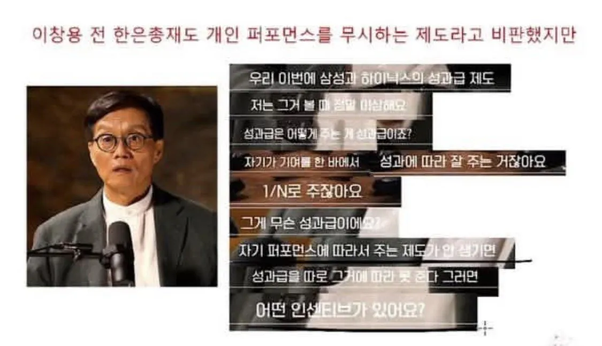

1. 원래 성과급은 공과에 대해 보상을 하고, 직원들 간의 경쟁 및 경쟁력을 높이기 위해서이다.
2. 엔비디아 같은 미국 기업은 박사급 뛰어난 핵심인재에게는 수십억원을 보상하지만, 고졸 초대졸급 일반 노동자에겐 수천만원만 딱 보상하고 그친다. 애초에 연구성과 기여에 맞게 주는 것이기 때문.
3. 그러나 삼전닉스의 성과급은 직원들끼리 N빵하는 나눠먹기로, 그런 효과가 거의 없음. 일례로 예비군 직장중대장도 반도체 인재로 N빵 한 성과급을 받게 된다고 함.
사이클아닐땐 사실상 삭감이었음 성과급 0이면 삼전 연봉 생각만큼 안쎔